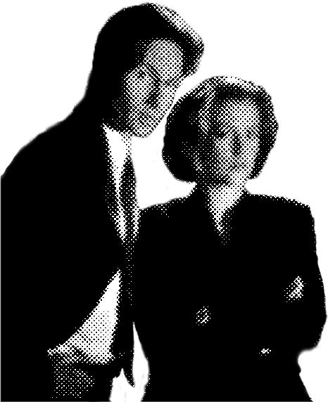
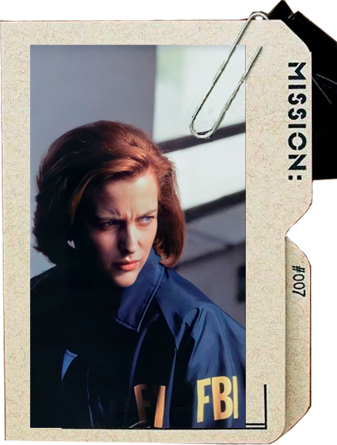

The X-Files es una serie de televisión estadounidense de ciencia ficción, misterio y drama creada
por Chris Carter. Fue producida por Ten Thirteen Productions y 20th Century Fox Television y se estrenó el 10
de septiembre de 1993 en la cadena Fox. La historia original se extendió hasta el 19 de mayo de 2002, con nueve temporadas y 202 episodios, y más tarde regresó con temporadas adicionales en 2016 y
2018 tras su éxito renovado.
La trama gira en torno a un par de agentes especiales del Federal Bureau of Investigation (FBI) que investi
gan casos sin resolver relacionados con fenómenos paranormales: sucesos inexplicables, criaturas extrañas, abducci
ones alienígenas y conspiraciones gubernamentales para esconder la verdad. Estos casos misteri
os son llamados “Expedientes X” (X-Files) debido a la naturaleza poco convencional que los hace difíciles de explicar mediante métodos científi
cos o tradicionales. El corazón de la serie es la relación profesional y personal entre Fox Mulder y Dana Scully. Mulder es un agente apasionado creyente
en fenómenos paranormales, profundamente motivado por la desaparición de su hermana, a quien cree secuestrada por extraterrestres. Scully, por el contrari
o, es una científica y médica forense escéptica, enviada originalmente para desacreditar las teorías de Mulder, pero con el tiempo desarrolla una compren
sión más profunda de lo inexplicable. La dinámica entre la fe y la razón, junto con la frase emblemática “La verdad está ahí fuera”, marcó un sello disti
ntivo de la serie.
La serie fue ideada por Chris Carter, quien se inspiró en programas clásicos de misterio y ciencia ficción como The Twilight Zo
ne, Kolchak: The Night Stalker y Twin Peaks para crear un thriller televisivo que combinase casos independientes de “monstruos de la
semana” con una narrativa más profunda sobre secretos gubernamentales y vida extraterrestre. La serie se destacó por su atmósfera inqui
etante, su banda sonora característica y la química entre sus protagonistas.
Fox Mulder - Agente especial del FBI, experto en perfiles criminales y obsesionado con lo paranormal. Cree firmemente en la existenci
a de extraterrestres y en conspiraciones que ocultan la verdad.
Dana Scully - Agente del FBI y médica forense asignada para aportar rigor científico a las investigaciones. Aunque escéptica al principio,
con el tiempo su visión se transforma a medida que enfrenta lo inexplicable.
Walter Skinner - Director asistente del FBI que actúa como superior de Mulder y Scully y, frecuentemente, su aliado en medio de la burocracia.
Cigarette Smoking Man (El Fumador) - Figura misteriosa que representa la oscuridad de la conspiración y los secretos gubernamentales que los
protagonistas intentan descubrir.
Deep Throat - Informante que proporciona pistas a Mulder sobre la existencia de conspiraciones antes de ser eliminado, convirtiéndose en un
personaje icónico de las primeras temporadas.
Alex Krycek - Agente ambiguo cuya lealtad cambia a lo largo de la serie, actuando a veces como antagonista dentro de las
propias filas del FBI.
The Lone Gunmen (Los pistoleros solitarios) - Un trío excéntrico de conspiracionistas y expertos en tecnología que asisten ocasionalmente a
Mulder y Scully y tuvieron su propio spin-of televisivo
Monica Reyes y John Doggett - Agentes introducidos en temporadas posteriores que se convierten en aliados esenciales de Scully y Mulder,
especialmente cuando Mulder aparece menos en pantalla en temporadas avanzadas.
The X-Files se ha convertido en un referente de la ciencia ficción televisiva , destacando por su mezcla de misterio, relación humana entre
personajes y planteamientos sobre lo desconocido y las teorías de conspiración. Su influencia perdura en la cultura popular y sigue siendo
materia de análisis por fans y críticos.

Efecto Scully

El Efecto Scully se refiere a un fenómeno social en el que la representación de Dana Scully —una mujer científica, médica y agente del FBI— inspiró a niñas y mujeres a
interesarse por carreras STEM (ciencia, tecnología, ingeniería y matemáticas) y a tener más confianza para perseguirlas. Este efecto fue observado tanto de manera anecdótica como en estudios formales.
El personaje de Dana Scully, interpretado por Gillian Anderson, rompió con muchos estereotipos televisivos de la época al mostrar a una mujer que era inteligente, fuerte, profesional y respetada en un campo
tradicionalmente dominado por hombres —y no solo como “acompañante” del protagonista masculino.
Una investigación liderada por el Geena Davis Institute on Gender in Media junto con 21st Century Fox y J. Walter Thompson Intelligence, encuestó en 2018 a más de 2,000 mujeres adultas para medir el impacto
que tuvo Scully en su relación con las carreras STEM. Estos son algunos resultados clave del estudio:
63 % de las mujeres que conocían a Scully dijeron que ella aumentó su creencia en la importancia de las carreras STEM.
50 % de ellas afirmaron que Scully incrementó su interés por estudiar o trabajar en campos científicos o tecnológicos.
91 % dijeron que Scully era un modelo a seguir (role model) para niñas y mujeres.
Antes de Scully, muy pocos personajes femeninos en la televisión mainstream combinaban profesionalismo científico y liderazgo sin estereotipos. Dana Scully representó:
Una mujer inteligente y competente, no definida por su relación con un hombre.
Un modelo que contradecía el estereotipo tradicional de que la ciencia es solo para hombres.
Un ejemplo de que las mujeres pueden tener éxito en campos difíciles como la medicina, la ciencia y la tecnología.